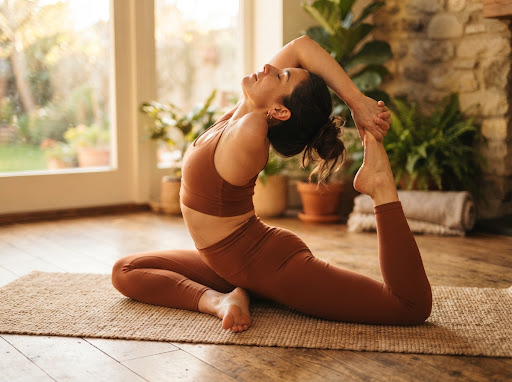

Yoga
Yoga5 Simple Poses for Morning Energy
Start your day with invigorating stretches to wake up your body and mind, creating a grounded rhythm that lasts all day.
Read Article →Thoughtful reads to help you bring the benefits of your practice beyond the mat.
YogaStart your day with invigorating stretches to wake up your body and mind, creating a grounded rhythm that lasts all day.
Read Article →
WellnessDesign a space that promotes relaxation and mindful living.
Read Article → Mindfulness
MindfulnessDiscover how focused breathwork can reduce stress levels.
Read Article → Practice
PracticeWhy slowing down can be one of the most productive choices for your body.
Read Article → Meditation
MeditationSimple ways to meet stillness without pressure or expectation.
Read Article →Bring greater presence and intention into the routines of everyday life.
Read Article →